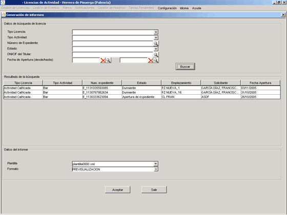

Opción de Menú:
Con esta opción el usuario podrá realizar listados de aquellas Licencias de Actividad del sistema que cumplan los criterios de búsqueda insertados por el usuario.

El formulario se divide en:
Datos de búsqueda de Licencia
Se introducirán los siguientes criterios de búsqueda:
Si alguno de los campos no se rellena, no se tendrá en cuenta ese campo en la búsqueda.
Resultado de la búsqueda
Listado de las Licencias resultado de la búsqueda realizada en el apartado anterior. Estos son los datos que aparecerán en el informe que genere el usuario.
Datos del Informe
Se mostrará una combo con las plantillas disponibles en el servidor. El usuario seleccionará aquella que más le interese, en función del tipo de informe que quiera realizar.
Las plantillas son ficheros .xml generados en el servidor con DataVision, herramienta para la generación de informes.
Los tipos de informe que se pueden generar son:

Botón Aceptar
Si el formato seleccionado es la PREVISUALIZACIÓN, abrirá una ventana de previsualización del informe. Si es cualquiera de los otros dos formatos, TXT o PDF, presentará un diálogo tipo Guardar Como para que el usuario seleccione el directorio donde desea guardar en local el informe.
Botón Salir
Cierra la opción de menú.